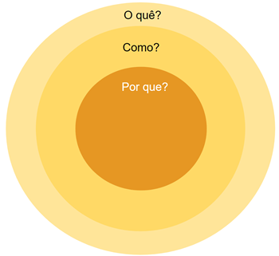

Projeto Inovação do Beto Carrero World
O parque temático Beto Carrero, é uma ótima forma de você se entreter e passar o tempo em brinquedos com sua família/amigos. No entanto, pelo fato do Beto Carrero ser o maior parque temático da América Latina, ele sofre graves problemas com filas longas.
O Beto Carrero pega uma média de 5 a 10 mil pessoas por dia, e isso nas baixas temporadas. Em altas temporadas, o número de visitantes pode alcançar uma quantidade de 25 mil pessoas por dia, sendo ado motivo principal pelas filas longas nos brinquedos do parque.
Esse problema ocorre pela falta de distribuição dinâmica do público e a ausência do controle de fluxo. Aqui vai um pequeno cálculo que explica como ocorre a formação de filas.
Idéias de Inovação
Com os estes argumentos apresentados, tive uma idéia: aumentar o controle de fluxo do público e sua distribuição em brinquedos.
Algoritmo inteligente
O primeiro seria um algoritmo inteligente acessível ao público que vê em tempo real as filas dos brinquedos, recomendando os brinquedos com as menores filas e dando desconto em lojas por atrações menos movimentadas. Isso melhora a distribuição de pessoas por todo o brinquedo, diminuindo as chances de ter uma fila enorme em apenas um brinquedo.
Limitação de Pessoas e Mudança de Preços na Temporada
Em temporadas mais baixas, o parque teria uma limitação de 6.000 pessoas por dia, com um preço mais acessível em dias “vazios”. Já em temporadas mais altas(feriados), o parque teria uma limitação de 18.000 pessoas por dia, com um aumento de preços em dias mais cheios. Isso evita filas longas e demoradas e consequentemente aumenta as idas em brinquedos diferentes, sendo mais satisfatório para o público curtir o parque.
Golden Circle
O golden circle é uma estrutura de pensamento que prioriza o propósito das perguntas: Por quê; Como? e O quê?
A metodologia é amplamente aplicável para liderança, marketing, vendas e desenvolvimento pessoal, incentivando a autenticidade e a conexão genuína com o público-alvo
Utilizando esse método para uma ampliar a comunicação entre os consumidores e a empresa.

Golden Circle Inovação
Por quê? : Essas ações têm o objetivo de melhorar as idas no Beto Carrero. Muitas pessoas se revoltam pelas enormes filas, tendo avaliações negativas sobre o parque. As ideias nao tem só como objetivo melhorar as idas para o parque mais satisfatório para o público, como pode fazer as pessoas quererem ir de novo sem problema de enfrentar enormes filas
Como? : Sensores por todo o Beto Carrero podem monitorar o tamanho das filas, enviando toda a informação dentro de um site acessado pelo público via QR CODE ou pelo site oficial. A venda dos ingressos é feita pelo site, mostrando o estoque de ingressos e o preço nos agendamentos para efetuar a compra.
O quê?: Essas ações oferecem uma maior satisfação para o público que quer ir lá apenas para se divertir, sem sofrer problemas de ficar em pé esperando para ir nos brinquedos por mais de 1 hora. No entanto, essas ações não afetam pessoas que compraram ingressos anuais.
Conclusão
Chegamos a conclusão que nesse brinquedo, ainda faltariam mais 4 horas e 50 minutos para todos poderem ir. A fila demoraria 1 dia inteiro e mais metade do outro. Ou seja, é por isso que é importante a limitação de pessoas no local com um controle de distribuição de pessoas nos brinquedos do parque.